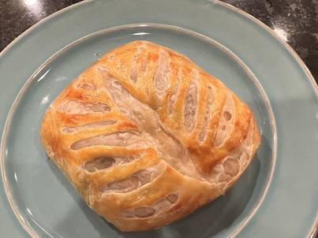
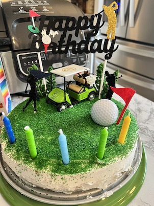

Recipes
On this page you'll find recipes I've tried!
Salmon Wellington

-
Comments: This recipe was a little complicated but tasted
alright. I think the puff pastry may have been too thin.
-
Source:
Well Plated
Shrimp Stir-fry

-
Comments: This recipe was delicious! But I had a lot of help
from other people at The Gathering Table.
-
Source:
The Gathering Table
Sugar Free Vanilla Cake

-
Comments: I made this cake for my partner's birthday. He likes
golf so I made it golf-themed.
-
Source:
Birch Benders
Top